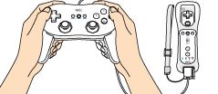

4 |
Utilisation de la manette |
 |
La manière de tenir la manette dépend de la configuration que vous utilisez.
  Télécommande Wii – position horizontale 
Télécommande Wii et manette classique pro Note: veillez à toujours consulter le mode d'emploi de la manette que vous utilisez.


Note: si le guide de votre dragonne est muni d’un levier, abaissez-le jusqu’à ce que vous entendiez un clic. Cela permettra au guide de rester en place.
Si un bouton ou un Stick du Nunchuk ou de la manette classique n'est pas en position neutre (voir ci-dessous) lorsque vous allumez la console ou connectez le Nunchuk ou la manette classique à la télécommande Wii, cette position deviendra la nouvelle position neutre et entraînera des problèmes de contrôle durant vos parties. Pour réinitialiser la position neutre, procédez comme suit:
La position neutre désigne la position d’un Stick directionnel ou d’un bouton quand celui-ci n’est ni incliné ni enfoncé.
|
 ,
,  ,
,  et
et  sur la télécommande Wii pendant trois secondes.
sur la télécommande Wii pendant trois secondes. |
 |
 |